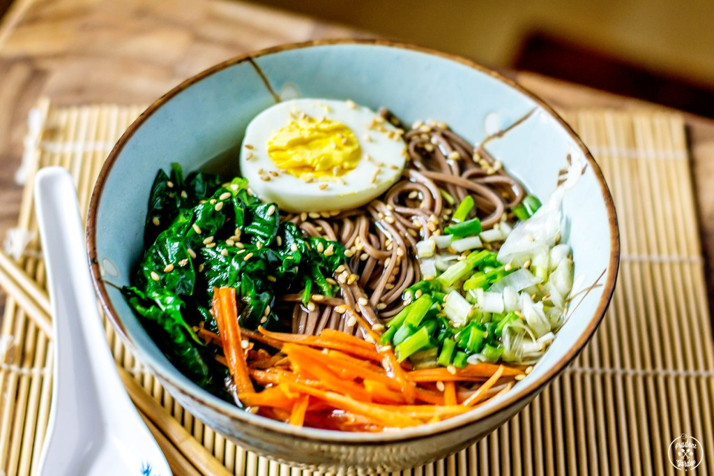

Soba Noodle Ramen Recipe

Description
A homemade version of ramen using buckwheat noodles and fresh veggies as a healthier alternative to instant
ramen.
Ingredients
- 8 cups Chicken/Vegetable Broth
- 1 inch Fresh Ginger, sliced
- 4 cloves Garlic, smashed
- 1 bunch Scallions, chopped
- 1 bunch Spinach
- 1 cup Carrots, shredded
- 2 Hard Boiled Eggs, sliced in half
- 1/4 cup Soy Sauce
- 6 oz Dry Soba Noodles
- 1 tbsp Oil
- Salt & Pepper to taste
Instructions
- Heat up the broth in quart pan
- Add the cloves of garlic, sliced ginger, and soy sauce to the broth.
- Bring the broth to a light boil. Let the broth simmer while you prepare the rest of the ingredients.
- In a non stick pan, heat up a tablespoon of oil and add the fresh spinach. Cook for a couple of minutes
until wilted. Lightly salt the wilted spinach. Set aside.
- Cook the soba noodles according to the package directions. Once the noodles are done, rinse the noodles
under cold water. Set aside.
- To assemble, add the cooked soba noodles to a soup bowl.
- Ladle about two cups of the broth into the bowl.
- Add the wilted spinach, shredded carrots, chopped scallions and the sliced hard boiled egg on top of the
noodles.
Additional Toppings
- If you like things on the spicy side, try adding a teaspoon or two of garlic, chili sauce or sriracha.
- You can add just about any type of your favorite veggies on top of your soup. Try mushrooms, corn, and other
types of fresh greens like kale or pak choy.